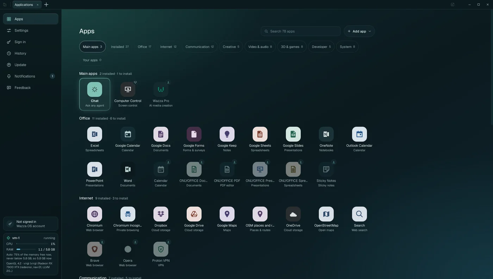
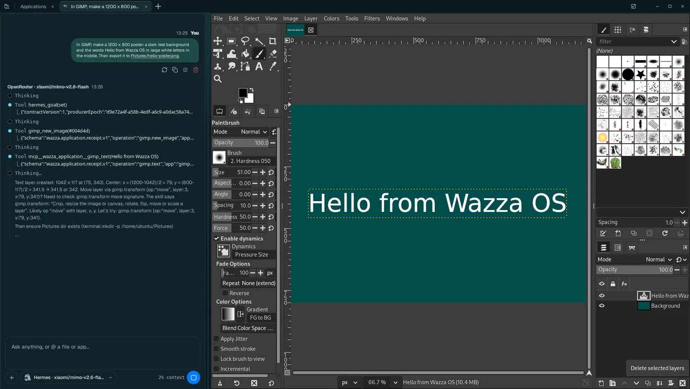

The Wazza OS website: https://os.wazza.ai/
Download Wazza OS Sign in to your Wazza account (Wazza OS, Wazza Pro)
Wazza OS is for Linux. During the beta, the download page asks for the access code you received.


Wazza OS
AI that works with you, in the tools you already use. Wazza OS runs a computer of its own (a virtual machine) next to yours, with real desktop apps in it, and AI agents that work in those apps beside you: you ask, they work, you watch, step in, or carry on in your own tab.
- Real apps, safely apart. GIMP, Blender, ONLYOFFICE, a browser, VSCodium and dozens more run in virtual machines, not on your computer.
- Several agents at once. Each app opens in a tab with its own Chat; agents work in parallel tabs while you keep yours.
- Skills and personas. Agents load know-how for each app and task, and learn your way of working.
- Drive. Agents see the app's screen and use the mouse and keyboard, in any app.
- Any AI. A plan you already pay for, an API key from one of 73 providers, a company gateway, or a model on your own computer.
Install#
Paste this in a terminal, on the Linux computer where Wazza OS will live. It asks for your password once, for
sudo.
$ curl -fsSL https://os.wazza.ai/install.sh | shTo test first, without installing anything:
$ curl -fsSL https://os.wazza.ai/install.sh | sh -s -- --checkFinds your package type#
Debian, Ubuntu and their family get
the .deb. Fedora and openSUSE get the .rpm. Arch and its family get the Arch package. Any
other distribution gets the tarball.
Verifies the release#
Nothing installs unless the release manifest carries Wazza's Ed25519 signature and the package matches its signed SHA-256 and size.
Resumes if cut#
The package is large. If the download stops, run the command again: it continues where it stopped.
What your computer needs, other ways to install, updates and removal: Install, update, remove. Your first start, step by step: The first start.
Connect your AI agent#
Claude Code, Codex, Cursor, VS Code, Gemini CLI, Hermes and Prime Agent can work in Wazza OS through
wazza-os mcp, the MCP server that comes with it. For Claude Code, once:
$ claude mcp add --scope user wazza-os -- wazza-os mcpThe line for each agent: The Wazza OS MCP. Everything an agent can do: Every Wazza OS MCP tool.
Control Wazza OS#
- From a terminal, on your desktop or on a server: The command line, and Wazza OS on a server (with its own virtual screen).
- From an agent: The Wazza OS MCP and Every Wazza OS MCP tool.
How it fits together#
Three words carry the whole manual: the VM, tabs and Chats.
- The VM (virtual machine) is a complete Ubuntu computer that Wazza OS starts, sizes and stops
for you. Apps are installed in it, not on your computer, so they never touch your own files unless you hand
them over. You can have up to 8 VMs (4 running at once); most people use one,
vm-1. - A tab shows one app of the VM (GIMP, Blender, a browser, the VM's file manager…) in the Wazza OS window. Tabs work like a browser's: open as many as you like, switch, close.
- A Chat sits beside each app, in its tab. You write to an agent (the AI program that works for you) and it works in that tab's app: through the app's own tools, or by looking at the app's window and using its mouse and keyboard (Drive). A Chat can also start other agents in other tabs.
Getting around shows the window part by part; Glossary defines every word.
Capabilities#
Each card says what the capability is, why or when you would use it, and who it is for. The link opens the full page: how to do it step by step, every option, the limits and examples.
Several agents at once, each in its own app
WhatOne Chat hands parts of a job to other agents, each in its own app tab (a browser for research, GIMP for images, an editor for code), all working at the same time.
WhyEvery agent has its own window, mouse and keyboard: none waits for a shared screen, and you watch any of them, or keep using your own tab, without getting in the way.
WhoAnyone with a job that spans several apps: research plus a report, assets plus a game, data plus slides.
Several agents at once →One install, the VM managed for you
WhatOne package for your distribution. Wazza OS creates its VM, sizes its memory, processors and disk by itself, starts it with the app and keeps itself up to date with signed updates.
WhyA complete Linux desktop with apps and agents, without setting up a VM, drivers or a container.
WhoEveryone: no virtualization knowledge needed.
Install, update, remove →Real desktop apps, with your graphics card
WhatAbout 70 ready-to-install apps: Blender, FreeCAD, Godot, GIMP, Inkscape, Kdenlive, OBS Studio, ONLYOFFICE, Chromium, VLC, VSCodium and web apps (Google, Microsoft, social networks). 3D apps draw on your GPU (Vulkan, OpenGL, OpenCL).
WhyAgents do real work in real apps, and you keep the result in the app you know.
WhoCreators, office users, developers, 3D and game makers.
Desktop apps and the GPU →Chats with the agent and model you choose
WhatFive agents (Hermes, Prime Agent, Claude Code, Codex, Antigravity), each with any model your sign-ins give it; switch agent or model in the middle of a Chat, which keeps the conversation.
WhyUse the plan you already pay for (Claude, ChatGPT, Grok, Google), your own API keys, or a free model, in the same window.
WhoAnyone who works with AI agents.
Chats, agents and models →Drive: agents see and use app windows
WhatAn agent looks at its tab's app as a picture and clicks, drags, types and presses keys in it, like a person, for every app, even one with no tools of its own.
WhyAny desktop app becomes something an agent can operate, and you see every action happen.
WhoAnyone who wants an agent to do GUI work: edit an image, fill a form, set up a scene.
Drive →Computer Control: an agent on your real computer
WhatA special Chat that can see and use your own computer's screen, keyboard and mouse, after you allow it, until you stop it or close its tab.
WhyFor work outside the VM: an app installed only on your computer, your own desktop settings.
WhoExperienced users who understand what they allow; never needed for work in the VM.
Computer Control →Skills that improve from your Chats
WhatSkills are written know-how agents load (how to use GIMP, how to write a report). Wazza OS ships many, reviews your Chats to learn lessons and new skills, and lets you read, edit and add them, and group them into personas.
WhyAgents get better at your apps and your way of working, and what one Chat learns, the next one knows.
WhoEveryone (learning is on by default); power users who tune or write skills.
Skills, learning and personas →Extend it: your own apps, its MCP, its command line
WhatAdd any Linux app with a recipe (Ubuntu packages or an install script), with its own tools and skill; give every Chat Wazza OS's own tools (its MCP); drive everything from a terminal or from another agent, on your computer or on a server with no screen.
WhyWazza OS adapts to your tools, and fits into scripts, servers and other agents.
WhoDevelopers, admins, teams automating work.
Add your own apps →Files and sharing
WhatBrowse the VM's files in the Explorer, copy and paste files between your computer and the VM, get results in Downloads/From the VM, reach your company's file servers, sync with your account.
WhyYour files go into the VM only when you say so, and come back as new files, never over yours.
WhoEveryone; teams for company folders and sync.
Files and sharing →Privacy and security
WhatWhat runs where (your computer, the VM, the AI provider), where keys are kept, what agents can reach, and every place where Wazza OS asks before acting.
WhyTo know exactly what you allow before you allow it.
WhoEveryone, and whoever answers for a company's data.
Privacy and security →Memory, processors and disk, handled for you
WhatThe VM takes memory when its apps need it and gives it back when idle, within a limit you can set (by default 75 % of the memory free); processors and disk follow the same rule.
WhyYour computer stays responsive; heavy work gets what it needs.
WhoEveryone; laptop users who want to set limits.
Memory, CPU and disk →The command line and servers
Whatwazza --gui … controls the running Wazza OS: open apps, read Chats, manage VMs, take
screenshots and recordings. On a server with no display, Wazza OS makes its own virtual screen.
WhyAutomation, remote machines, scripts and CI.
WhoDevelopers and admins.
The command line →Start here#
Quick start
From install to an agent working in an app, in about 10 minutes.
Quick start →Install, update, remove
The package for your distribution, what your computer needs, updates and uninstalling.
Install →The first start
The six steps of the very first start, one by one.
The first start →Something is wrong
Symptoms, causes and fixes: the VM, Chats, apps, the display, updates.
Troubleshooting →About this manual#
- Written for Wazza OS 0.2.0 (build 44c5d0ea07c1, published 2026-11-03). The screenshots come from a test computer (Ubuntu 24.04, GNOME) running Wazza OS 0.2.0: alpha 2 and the builds that followed it, whose screens are the same.
- Press / anywhere to search every page and heading; the search works offline.
- The sun and moon button switches between dark (the default, like the app) and light.
- Words in bold are what Wazza OS shows on screen: a button, a tab, a menu item. Home › Sign in › API keys means: open Home, then Sign in, then its API keys tab.